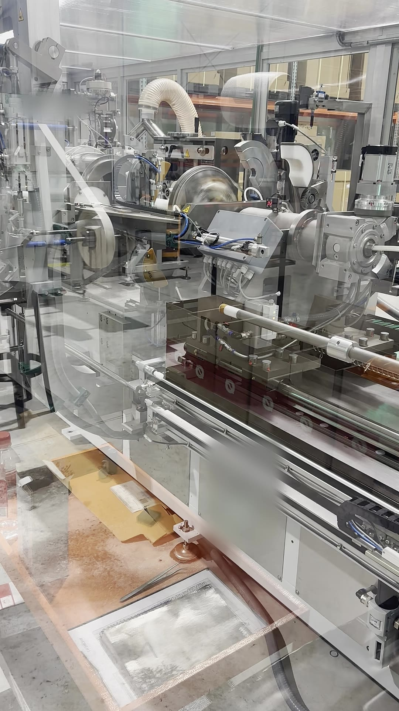

Corrugado y embutido inmediato para tu propia tripa fibrosa
Si ya comprás tripa fibrosa, la plisamos en tubos y le damos el tratamiento E.I. (embutido inmediato) en nuestra planta. Vuelve en cajas, lista para la embutidora: menos manipulación y menos tiempo de línea.

- Tu tripade cualquier origen
- Plisada en tuboscompatible con clipeado automático
- E.I.sin remojo previo
- La Plataplisadoras en nuestra planta
Cómo funciona
- Nos enviás la tripa fibrosa en carretes o en el formato en que la recibís.
- La plisamos en tubos del largo que necesite tu embutidora y le aplicamos el tratamiento E.I..
- Te la devolvemos en cajas, lista para usar sin remojo.
Qué ganás
¿Todavía no tenés proveedor de tripa? Mirá nuestra tripa fibrosa Fibrø®, que ya viene plisada y con E.I..
- Menos manipulación por pieza y menos paradas en la línea.
- Sin baldes de remojo ni tiempos de espera.
- Tubos compatibles con equipos de embutido y clipeado automáticos.
Preguntas frecuentes
¿Plisan tripa de cualquier marca?
Sí. Trabajamos con la tripa fibrosa que ya usás, del origen que sea.
¿Qué largo de tubo pueden hacer?
El que necesite tu embutidora. Decinos el equipo y el calibre y lo ajustamos.
¿Cuánto demora?
Depende del volumen. Te confirmamos el plazo al cotizar.